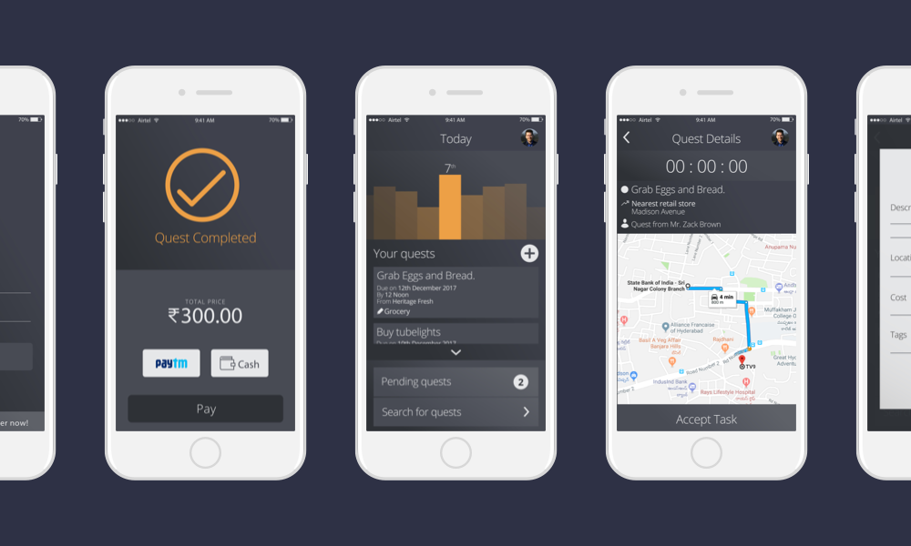
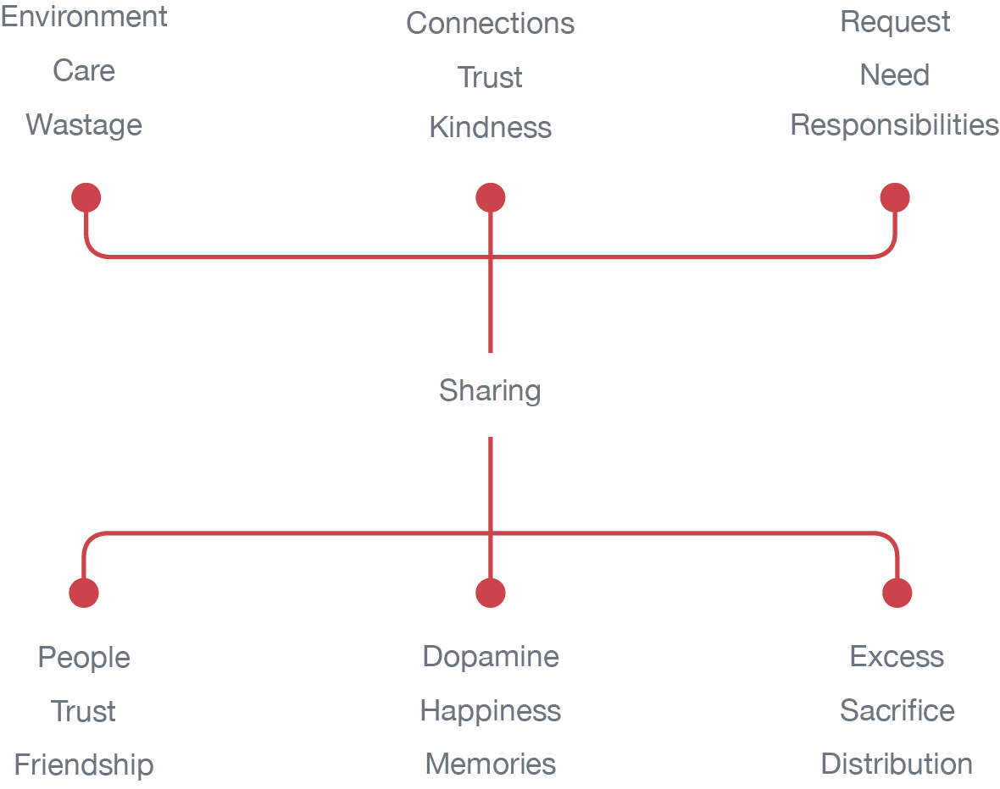
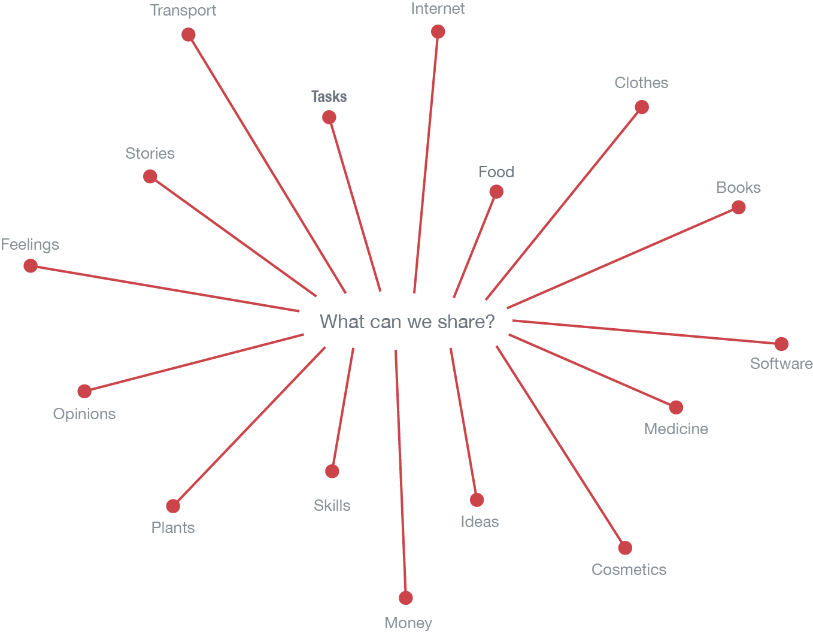
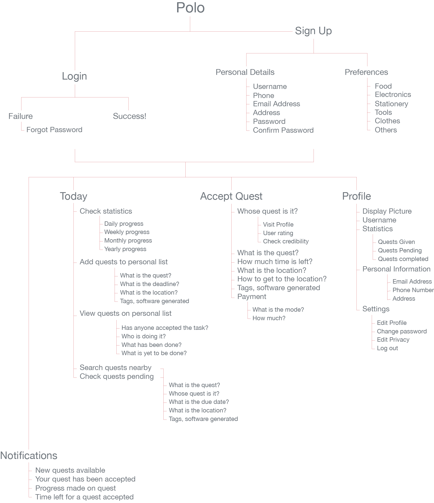
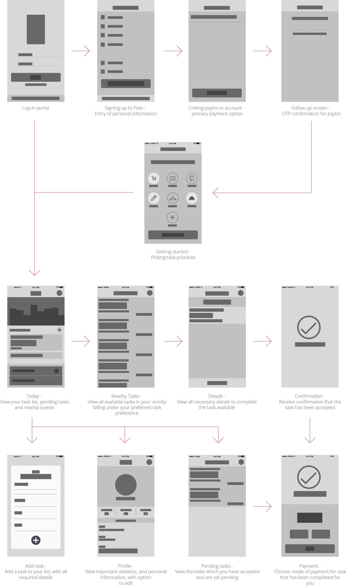
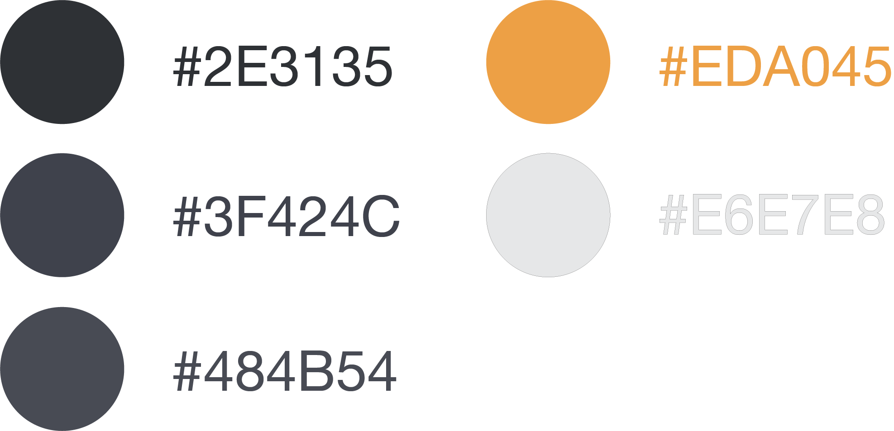
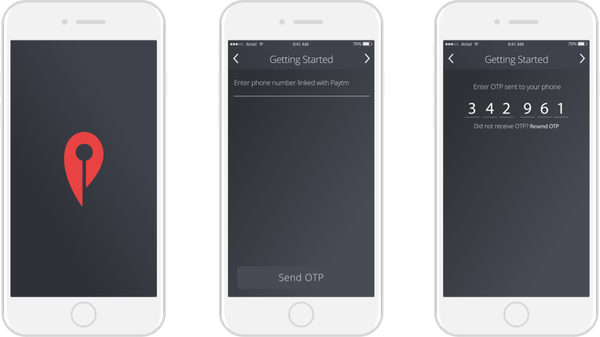
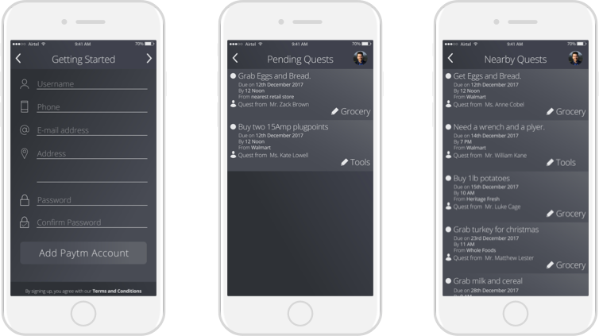
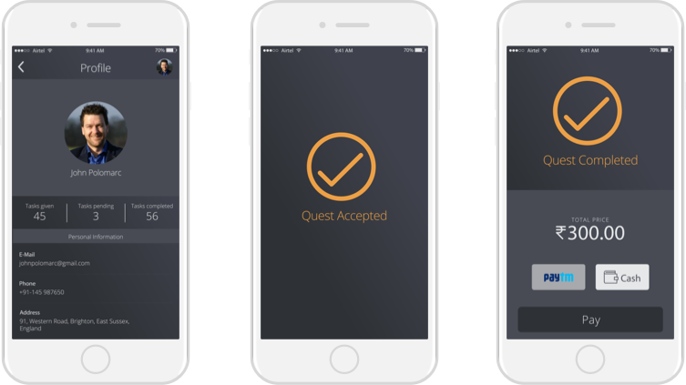

The Problem
The brief was to design a meaningful sharing experience that brings people together. We must be able to enrich people's interaction and engagement with their community and with the environment.
The Solution
Our solution is to enable the sharing of errands and tasks among the small neighbourhood or community to minimise time and resource utilization.
Research
As we approached sharing, we first began to break down the fundamentals of sharing, to understand what sharing anything with anyone entails. We realized that sharing is to be able to make a connection between any two people, or a person and a community, or between two communities.

In our understanding of sharing, we realized that we value the human touch. If we can do something to bring people together over something important they both share, we can kindle togetherness.

Tasks. We realized that with so many things to do everyday, the ability to make tasks easier for someone would help share responsibility.
More and more people are held up with work each day, and to be able to share tasks with someone doing the same work will come as a sigh of relief.
“To create a portal to enable sharing of tasks between any two people in a neighbourhood.”
The Design
Once we finalised our objective for the problem and decided what needed to be incorporated, we went about designing the portal for task sharing.
Task Flow
In creating the protal, we chalked out the task flow of the ideal user going through the default use case of the portal and also covering all edge cases.

Low Fidelity Wireframes
Once we had the task flow sorted, we went through multiple iterations of wireframing before narrowing down on the following wireframes for the portal.

Color Palette
For the various screens of the application, we finalised a color palette reflecting an authoritative and reassuring demeanour.

Typography
To complement the purpose and color palette, we chose a typeface that is straightforward, legible and open.
High Fidelity Mockups
Having finalised the color palette and the type, we went about crafting the final screens of the portal keeping in mind the finer details and the experience.
Log In and Sign Up
Enter credentials to access account, or sign up, entering personal information and choosing task preferences.

Today - Activity Feed
Access your to-do list, with all task needing completion. Access your statistics, with details of how many tasks completed per week. Search for nearby tasks requiring completion. Also view pending tasks taken up but not completed.
Add Task to List
Add a new task to your list, which can be viewed by other people in your neighbourhood. Enter important imformation like due date, location and verify tags.
Task Details
When accepting a task, you view important details like where the goods have to be delivered, where it has to be picked up, and the time remaining.
Task Completed
Once a task has been completed, payment has to be made. Either using paytm or cash, if possible.
Other Screens
A look at all the other screens from the low fidelity wireframes from above. We created high fidelity mock ups for the more important screens and not all sub states.




Learning
This project was my first formal entry into the field of user experience design and interface design. The learning from this one project alone was tremendous, from following the design process to covering all bases for the target audience.
Scope
Currently, the project ended with a few key screens designed, but going ahead further details can be incorporated into the task flow and user journey, with added complexity and functionality.